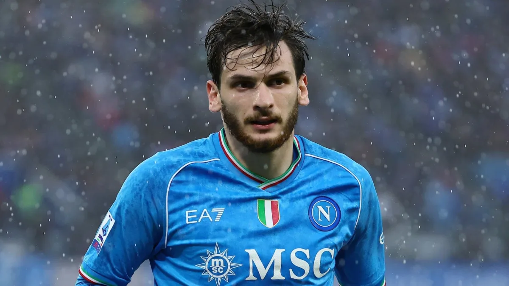
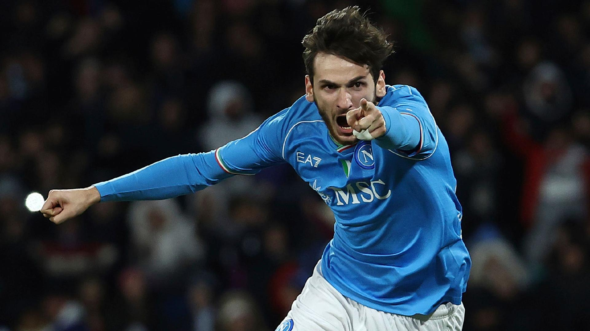

Former Arsenal and Tottenham striker Emmanuel Adebayor has revealed his admiration for Napoli and Nigeria forward Victor Osimhen, Soccernet.ng reports. Osimhen made a massive splash for Nigeria’s Golden Eaglets at the FIFA U17 World Cup and Lille in Ligue 1 but only became friends with Adebayor when he was at Napoli. Acting as his mentor, Adebayor always offered words of encouragement to Osimhen and watched with admiration as the Super Eagles star powered Napoli to a historic Scudetto in 2023. Osimhen’s successful year was rewarded in December when he was named the Footballer of the Year at the CAF Awards in Morocco. In his acceptance speech, Osimhen name-checked Adebayor among the players who played a part in his success story. “I started talking to him (Osimhen) one or two years (ago),” Adebayor told the BBC. “Every time I talk to him, it’s about encouragement, and I tell him what to do and what not to do. I didn’t even know that he was listening. “To come on a bigger stage like the Caf awards, the Ballon d’Or of Africa, and mention my name, and thank me for the encouragement… to be honest with you, I got emotional. “And I’m a guy that doesn’t get emotional at all. But there, I didn’t have a choice. “It was even more beautiful than when I won it myself. To be honest with you, this is how big it was. “This will stay with me for life. If he continues in this stride, he will win more Caf awards in the future.”
Jose Mourinho proves he's still the master of mind games as he grabs Napoli star Khvicha Kvaratskhelia by the FACE and teaches him a lesson in heated touchline exchange... before Roma go on to win against nine men!
 Napoli players are being harshly criticised by Italian media following a 4-0 loss against Frosinone in the Coppa Italia Round of 16, with La Gazzetta dello Sport calling Victor Osimhen and Khvicha Kvaratskhelia ‘useless.’The Partenopei were humiliated by newly promoted side Frosinone on Tuesday night, suffering a 4-0 loss at the Stadio Maradona. Walter Mazzarri heavily rotated his squad but had to introduce Giovanni Di Lorenzo, Osimhen and Kvara in the second half, when the result was still 0-0. Juventus loanee Enzo Barrenechea broke the deadlock at minute 65, shortly after Osimhen’s and Kvaratskhelia’s introduction. The Partenopei stars were heavily criticised by Gazzetta on Wednesday. The pink paper said Osi and Kvara were ‘useless’ against Frosinone. They were both rated 5/10, but Di Lorenzo received the lowest rating: 4/10. On the other hand, it was a triumph for Frosinone players. Giuseppe Caso was the MVP with 8/10, followed by the debutant Mateus Lusuardi, Barrenechea and Abdou Harroui, who all received 7.5. Frosinone will face the winner between Juventus and Salernitana in the quarter-finals.